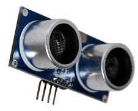
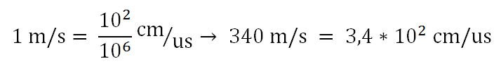
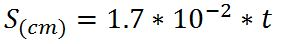
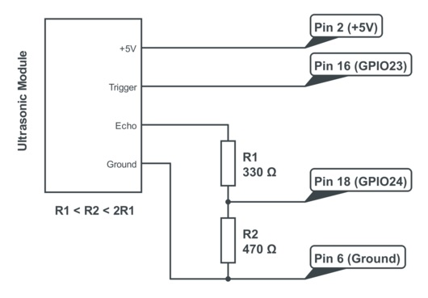

Un sensore a ultrasuoni come il HC SR 04 misura il tempo impiegato dalle onde sonore emesse da una sorgente a ritornarvici dopo aver incontrato un ostacolo che le riflette. Il fascio di onde sonore emesso ha forma conica e lo stesso vale per le onde riflesse da un ostacolo, questo fa si che il sensore riceva molte riflessioni da diversi oggetti, ciò rende il sensore, da solo, incapace di distinguere un oggetto da un altro o aperture negli oggetti troppo piccole.

Calcolo distanza
La velocità del suono nell’aria alla temperatura di 20° è di circa 340 m/s e il sensore restituisce il tempo impiegato per andare e tornare dalle onde sonore in microsecondi, inoltre è comodo avere la misura in cm, quindi bisogna convertire la velocità del suono da m/s in cm/microsecondo:

Il tutto va ancora diviso per 2 in quanto il tempo che abbiamo convertito è quello impiegato per andare e tornare indietro dalle onde, mentre per calcolare la distanza dall’oggetto ci basta metà di questo tempo perché il tempo tiene conto del percorso di andata più quello di ritorno, la formula finale, dove t è il tempo restituito dal sensore in microsec è:

Funzionamento del sensore
Il sensore dispone di 4 pin: Vcc (+5V), Trigger, Echo, GND. Si invia un impulso alto sul pin Trigger per almeno 10 microsec, a questo punto il sensore invierà il ping sonoro e aspetterà il ritorno delle onde riflesse, il sensore risponderà sul pin Echo con un impulso alto della durata corrispondente a quella di viaggio delle onde sonore, dopo 38 millisec si considera che non sia stato incontrato alcun ostacolo.
Connessione del sensore al RaspberryPi
Si connette il sensore a +5V e GND del RaspberryPi rispettivamente ai pin Vcc e GND del sensore, e Trigger ed Echo a due porte qualsiasi del Raspberry.
Il sensore per inviare un segnale HIGH usa 5V, che però sono troppi per le porte del Raspberry, che supporta solo 3.3V. Quindi si può usare un semplice partitore di tensione tra ECHO e massa formato da 2 resistenze, avendo su ECHO 3.3V. Quindi R1<R2<2R1, ex. 330 e 470, 1k e 1.5K.
Lo schema è il seguente:

Codice Python:
#------ LIBRERIE -------#
import time
import RPi.GPIO as GPIO
#------ FUNZIONI ---------#
def misura():
# Funzione che misuara la distanza
GPIO.output(TRIGGER, True)
time.sleep(0.00001)
GPIO.output(TRIGGER, False) # Invio un impulso di 10uS
inizio = time.time()
while GPIO.input(ECHO)==0:
inizio = time.time()
while GPIO.input(ECHO)==1:
fine = time.time()
tempoPassato = fine-inizio # Ricavo il tempo di andata-ritorno degli ultrasuoni
distanza = tempoPassato * 17000 # Calcolo la distanza in cm
return distanza
#------------ FUNZIONE PRINCIPALE ---------#
#--- DICHIARAZIONE PIN ----#
GPIO.setmode(GPIO.BCM) # Impostiamo il riferimento ai pin di tipo BCM che indica il numero reale dei pin
TRIGGER = 23
ECHO = 24
print "Misure:"
#--- SET-UP DEI PIN ------#
GPIO.setup(TRIGGER,GPIO.OUT) # Trigger come output
GPIO.setup(ECHO,GPIO.IN) # Echo come input
# Mando il pin del trigger LOW in caso fosse HIGH
GPIO.output(TRIGGER, False)
try:
while True:
distanza = misura()
print "Distanza : %.2f" % distanza
time.sleep(0.5) # Aspetto 0.5s dalla prossima misura
except KeyboardInterrupt:
# Quando si preme CTRL-C per fermare il programma
# Resetto il set-up dei pin
GPIO.cleanup()